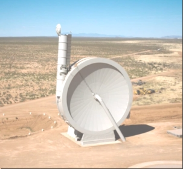

Details. Deimos Block Launch Stations
The trajectory shown in the gif animation is not possible if stones are thrown from Deimos at a speed of 11 m/s. It will take 16 to 20 days for the rock to reach the gravity of Phobos. So we need a mechanism that will shoot stones at a speed of 400 m / s, so that in half a day it will fly to Phobos.
{kind=link}
Such mechanisms are already being developed on earth, for example SpinLaunch Already now this centrifuge accelerates the load up to 400 m/s. It will be necessary to assemble at least two such mechanisms on Deimos.
If accelerating engines run on electricity, then you will need a battery and solar panels. The more solar panels, and the more powerful the battery with the accelerating engine, the faster it will be possible to throw stones and slow down Deimos faster.
Two SpinLaunch will have to work from different sides of Deimos to compensate for the rotational effect. The main thing need to fix these mechanisms well on the surface of Deimos. You will need a driller who will help to fix the anchors. Robots will be needed to extract pieces of stones and fix them on the mechanism.

People will be able to walk on Deimos, If they do not run up to a speed of 40 km / h, they will always be pulled back by Deimos. People there will be able to lift huge weights, but very slowly, because inertia. Starship will be a home for people. And the means of transportation are mechanisms that move by jumping. It is unlikely that it will turn out on wheels. Yes, the danger of radiation remains, maybe it will be water 1.5 meters thick on the walls of the starship.
The main question remains, how long will it take to drop Deimos on Mars. I think for a long time. But it is Possible. I'll be count.
To be continued.
09 May 2022 to Home Page